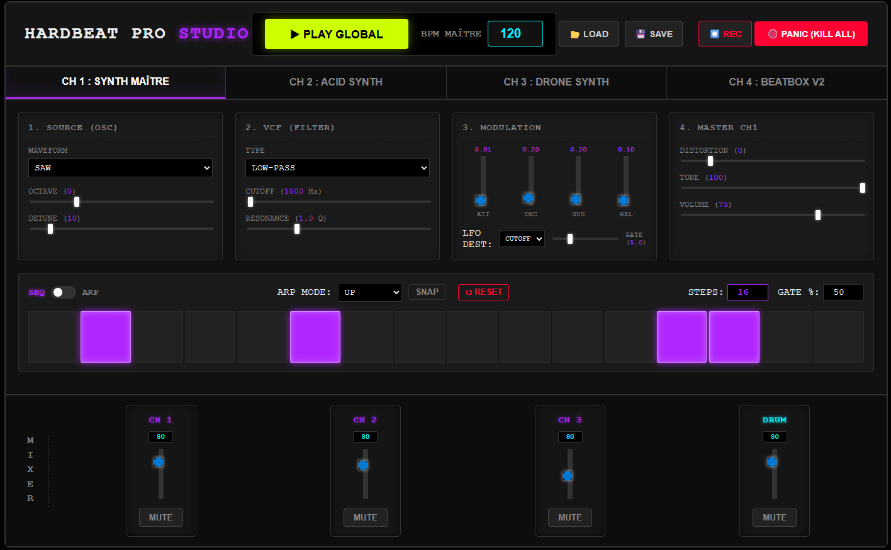

HARDBEAT PRO STUDIO
La Groovebox Industrielle 4 Canaux propulsée par le Web Audio API.
🔊 ÉCOUTER LA DÉMO : "Industrial Roller"

La Groovebox Industrielle 4 Canaux propulsée par le Web Audio API.
Trois canaux indépendants avec séquenceurs matriciels, ondes variables (Saw, Square, Sine, Triangle), filtres résonants, LFOs et enveloppes ultra-rapides (5ms anti-clic).
Un module de percussion à 3 pistes (Kick, Snare, Hi-Hat) intégrant 3 niveaux de vélocité par pas pour des "ghost notes" organiques et un groove implacable.
Une console de mixage globale en bas d'écran avec contrôle des volumes et boutons "MUTE" instantanés, offrant un headroom massif pour éviter le clipping.
Un cœur logiciel centralisé assurant une synchronisation parfaite à la milliseconde près de toutes les machines lors du déclenchement du "Play Global".